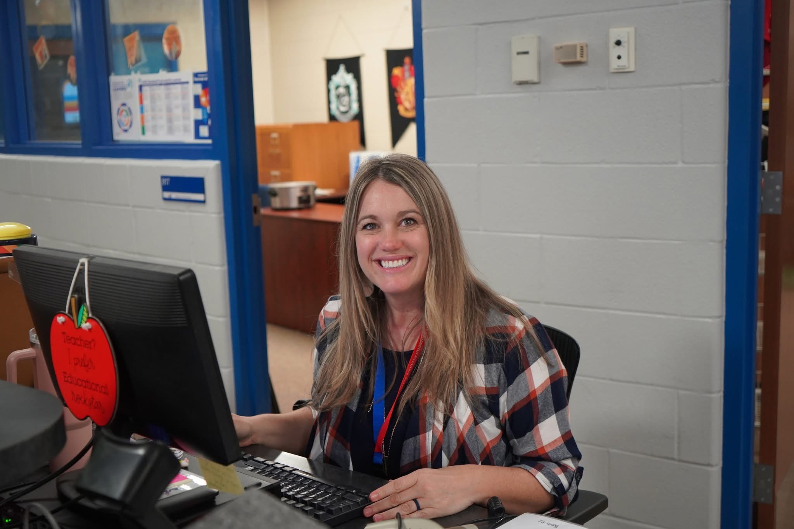

Welcome to the library—yes, it’s run by me, your friendly middle school librarian (professional book matchmaker, bounty hunter of books, part-time tech support, full-time chaos coordinator). I spend my days helping students find books they swear they won’t like… until they do, fixing printer issues that mysteriously only happen while I'm teaching, and reminding everyone that yes, you actually have to return your books eventually. I believe the right book can change your whole day, that the library should never be boring, 80's music should be playing at all times, and that snacks should absolutely be allowed in the library, especially if you're sharing!
👉 If you need a book, a recommendation, or just a place to exist for a minute—you’ve found your spot. 📚✨
